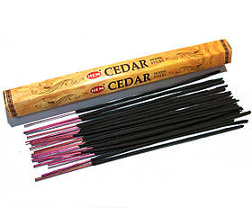
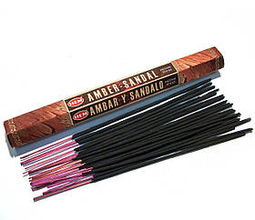
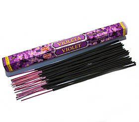
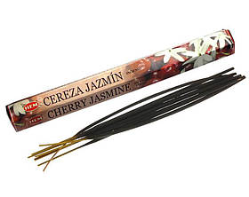
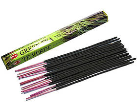
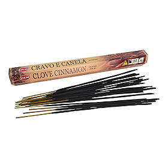

↗HEM / CEDAR
Кедр
Ціна й наявність у Homy ↗
АРОМАТИ. РЕЧІ. ВІДЧУТТЯ ДОМУ.
Маленькі речі, з яких починається затишок. Від улюблених аромапаличок до особливого подарунка.
Обрати аромапалички ↗Не знаєте, який аромат обрати? ↓З РЕАЛЬНОГО КАТАЛОГУ HOMY
Шість товарів для демонстрації ідеї.
Ціну, наявність і кількість в упаковці
перевіряйте у чинному магазині.
У добірці: 6

↗HEM / CEDAR
Ціна й наявність у Homy ↗

↗HEM / AMBER SANDAL
Ціна й наявність у Homy ↗

↗HEM / VIOLET
Ціна й наявність у Homy ↗

↗HEM / CHERRY JASMINE
Ціна й наявність у Homy ↗

↗HEM / GREEN TEA
Ціна й наявність у Homy ↗

↗HEM / CLOVE CINNAMON
Ціна й наявність у Homy ↗
Назви, фото та посилання — з відкритого каталогу Homy, перевірено 06.11.2026. Це не автоматична синхронізація залишків.
ЗНАЙДІТЬ ЩОСЬ СВОЄ
ВАШ МАЛЕНЬКИЙ РИТУАЛ
Почніть із відчуття, яке хочеться принести додому. Допоможемо визначитися з напрямом пошуку.
ЯКІ АРОМАТИ ВАМ БЛИЖЧІ?
У нашій демонстраційній добірці — Cedar та Amber Sandal від HEM. Відкрийте картку, щоб перевірити опис, ціну та наявність.
Переглянути добірку ↗Напрями згруповані за назвами товарів. Повний опис і наявність перевіряйте в магазині.
ЗНАЙОМТЕСЯ, HOMY
Це знайомий аромат, тепла фактура дерева та речі, які хочеться залишити поруч.
Homy поєднує сувеніри з Індії, Індонезії та Китаю, етнічні товари й українські дерев’яні вироби. Для тих, хто любить облаштовувати дім по-своєму.
Більше про магазин ↗ПЕРЕД ПОКУПКОЮ
Це демонстрація нового оформлення Homy. Кнопки каталогу відкривають чинний магазин homy.kh.ua, де можна перевірити ціну й наявність та оформити замовлення.
Актуальні способи, строки та умови дивіться на сторінці доставки й оплати Homy ↗.
Телефон, зазначений на сайті Homy: +380 (68) 103-81-17. Також на чинному сайті вказаний зв’язок через Viber.
ЗАЛИШТЕ МІСЦЕ ДЛЯ ПРИЄМНОГО